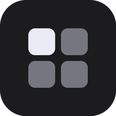

Opening Home Deck…
Add Home Deck to your shelf:
Click
Install
below (or Chrome menu ⋮ →
Cast, save and share
→
Install page as app…
).
Open the Launcher, right-click
Home Deck
→
Pin to shelf
.
Install